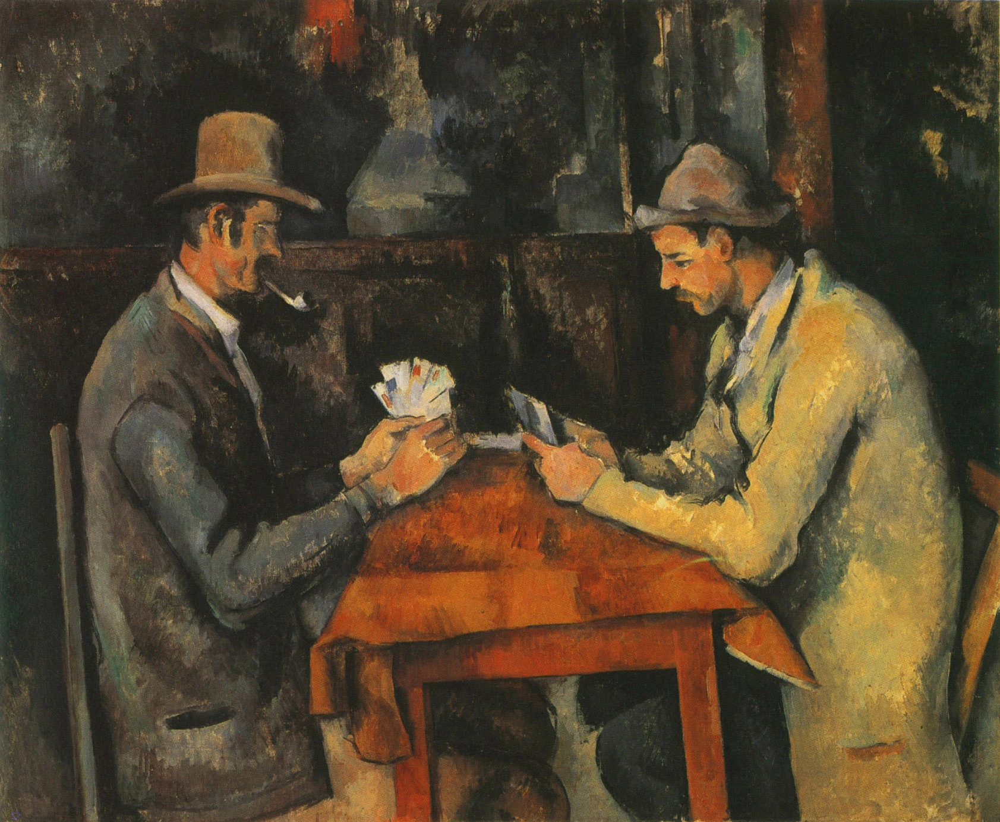

セザンヌは「形が少し変？」と思う場所を見逃さない。リンゴ、机、山、人物を、輪郭線ではなく小さな色の面が積み重なってできたものとして見ると、独特の安定感と揺れが同時に見えてきます。
セザンヌは、美術史では「近代絵画の父」「キュビスムにつながる」と出てきます。でも最初はその説明を読んでも、絵のどこを見ればそう思えるのか分かりませんでした。静物を見ていて「あれ、皿が落ちそう」「テーブルの端が左右でつながらない」と気づいたとき、やっと入口ができました。正確に見せるより、一枚の画面の中で物をどう成立させるか。その組み立てを見る画家だと思うと面白くなります。
1. 静物では「テーブル、本当に水平？」を見る
リンゴ、瓶、布が並ぶ静物では、最初にテーブルの手前の線を追います。左右で角度が微妙に違ったり、皿が少し上から見えすぎていたり、物の位置が現実の一つの視点では説明しにくいことがあります。
それを失敗として直すのではなく、「このリンゴを見せるには少し上から、この瓶は横から見せたい」と、見え方を一枚の中で調整していると考えます。物が全部よく見える代わりに、空間が少し揺れます。その揺れがセザンヌらしさの入口です。
2. 輪郭線より「色の面」で形ができる
リンゴの周りを一本の線で囲んでから色を塗るのではなく、赤、黄、緑、青みなど小さな色の面を重ね、丸みを作っているように見える作品があります。近くでは色のパッチ、離れると果物や山になる。その変化を見ます。
影も黒一色ではありません。物の周囲に青や緑が入り、背景と物が完全には切れません。「ここからリンゴ」という輪郭より、隣の色との違いで形が立ち上がります。
3. 「一つの正しい視点」から少し自由になる
ルネサンス以降の遠近法では、観客が一つの位置から空間を見ているように整える方法があります。セザンヌでは、その一つの視点にきれいに収まらない場所が出てきます。長い時間対象を見て、少し位置を変えたときの見え方まで画面に混ざるような感覚です。
初心者なら「複数視点」という言葉を覚えるより、まず「この皿は上から見ている？横から？」と具体的に一つ確かめる方が分かりやすいです。見る位置を想像すると、画家が対象の周りで目を動かした感じが出てきます。
4. サント＝ヴィクトワール山は「山の景色」より構造を見る
セザンヌが繰り返し描いたサント＝ヴィクトワール山では、山、木、家、空をそれぞれ大きな色面として見ます。遠くの山だから薄く描く、手前だから細密に描く、というだけでなく、画面全体に青、緑、黄土色の面が配置されます。
自然をそのまま写した風景というより、色のブロックで画面を建てていく感じです。木の枝と山の輪郭、家の四角など、大きな形同士の噛み合わせを見ると、静かな風景がかなり構築的に見えてきます。
5. 人物も「性格」より重さと形を見る
《カード遊びをする人々》では、二人の表情より先に、帽子、肩、腕、机を大きな形として見てみます。人物もリンゴや瓶と同じように、画面を構成する重い存在として置かれています。

カードへ集中する手元は小さいのに、身体全体は大きく安定しています。会話やドラマを読むより、二人の塊が机を挟んでどう釣り合っているかを見ると静けさの理由が分かります。
6. キュビスムへつながるのは「物を見えたまま写す」から離れたこと
セザンヌのあと、ピカソやブラックは対象をさらに幾何学的な面へ分け、一つの固定視点に頼らない画面を発展させます。セザンヌの絵がそのままキュビスムというわけではありませんが、「物を一つの見え方に固定せず、画面の中で組み直す」という方向が大きな橋になります。
だからキュビスムの記事を読む前に、セザンヌの皿、テーブル、山の一部を見ると、「突然バラバラな絵が始まった」のではないことが分かります。美術史が画面の変化としてつながります。
7. 実物では、まず違和感→近くの色面→離れて全体
セザンヌの実物を見たら、最初に「何か変？」を一つ見つけます。テーブルの角度でも、人物の身体でも、山でも構いません。次にその場所へ近づき、輪郭より色の面がどう重なっているかを見る。最後に離れ、画面全体が不思議なのに安定しているか確かめます。
少し知識が増えると、「遠近法がおかしい」ではなく「何を優先してこの形にした？」という質問に変わります。正解を当てる必要はありません。違和感が、セザンヌでは見るポイントになります。
「少し変？」は見逃さない。色の面で、世界を組み直す。